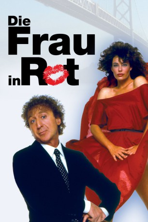

#5134 Die Frau in Rot
Alternativ: The Woman in Red
Auszeichnungen: 2 Oscars gewonnen 1 GoldenGlobes gewonnen
 
 IMDB-Wertung: 5.9 / 10
IMDB-Wertung: 5.9 / 10  Metascore: 0
Metascore: 0 
Art-Director Teddy Pierce traut seinen Augen nicht: Da steht eine aufregende Frau in einem roten Kleid und lässt wie einst die Monroe ihren Rock über einem Lüftungsschacht flattern. Der Anblick verwandelt den treusorgenden Ehemann in einen heißblütigen Liebhaber, der nur noch von einem Gedanken getrieben wird: Im Bett dieser aufregenden Frau zu landen ...
Jahr: 1984
Dauer: 86 Minuten
FSK: 12
Land: USA Studio: Orion PicturesTonspuren: DD2.0 - ,
Untertitel:
Auflösung: 1080p (1912x1032) Größe: 5201 MB
Genre: Komödie, Liebe
Regisseur: Gene Wilder
Drehbuch: Martin Provost
Soundtrack:
Darsteller:
 Gene Wilder als Teddy Pierce
Gene Wilder als Teddy Pierce Charles Grodin als Buddy
Charles Grodin als Buddy Joseph Bologna als Joey
Joseph Bologna als Joey Judith Ivey als Didi Pierce
Judith Ivey als Didi Pierce- Kelly LeBrock als Charlotte
- Gilda Radner als Ms. Milner
- Kyle T. Heffner als Richard
- Monica Parker als Corrine
- Noni White als Stewardess #2
- Catherine Schreiber als Lacy
- Deborah May als Hostess
- Michael Huddleston als Mikey
- Michael Zorek als Shelly
 Billy Beck als Bartender
Billy Beck als Bartender- Kyra Stempel als Missy Pierce
- Robin Ignico als Becky Pierce
- Viola Kates Stimpson als Mama Dell
- Danny Wells als Maitre D'
- Buddy Silberman als Gilbert
- Ernest Harada als Doorman
- Julann Griffin als Miss Griffin
- Sandra Wilder als Blonde Photographer
- Tammy Brewer als Stewardess #1
- John McKinney als Buddy's Friend
- Barbara Schweke als Therese
- Larry Gilman als Frank
 Milt Kogan als Air Traffic Boss
Milt Kogan als Air Traffic Boss- Bob Balhatchet als Traffic Controller #1
- Dan Magiera als Traffic Controller #2
- Barbara Andrews als Eileen
- Sharon Moore als Sharon
- Allen Gebhardt als Young Man
- Sheldon Feldner als Fireman
- George Johnson als Policeman
- Annie Waterman als Woman
- Steven Kravitz als Companion
- Dale Kusch als Club Member
- Kelly Andrus als Girl #1 at Club
- Deborah Dalton als Girl #2 at Club
- Elissa Leeds als Girl #3 at Club
- Stevie Myers als Riding Teacher
- Freddie Dawson als Club Attendant #1
- Robert Krantz als Club Attendant #2
- Maureen O'Conner als Waitress
- James Higgins als Salesman
- Elizabeth Norment als Hairdresser
- James Cavan als Fisherman
- Roberta J. Smith als Ethel
Datei: X:\1984\Frau in Rot, Die (1984, FSK12, 1912x1032).mkv seit 23.12.2016
Festplatte: HD 1980-1986
 Es gibt insgesamt 46 Filme in der Gruppe '1984'
Es gibt insgesamt 46 Filme in der Gruppe '1984'